Untangling Data Complexity: Custom Oxygen Frameworks for Edition Projects
Table of Contents
Abstract
Consistency and coherence in annotated and enriched data are vital to the success of any digital edition project. Custom frameworks within the oXygen XML Editor provide a user-friendly approach for editors to interact directly with XML data, thus lowering entry barriers and ensuring consistency across datasets. Drawing on our experiences as customisers, this review explores the benefits and limitations of these custom frameworks, highlighting their potential for interdisciplinary teams with varying levels of XML expertise. We critically examine the technical requirements for creating and maintaining custom frameworks, as well as the current state of documentation. We also discuss challenges that users may face with oXygen’s complex interface. Once implemented, frameworks facilitate uniform data input, allow for the automation of repetitive annotation tasks, and integrate seamlessly with project workflows, thereby enabling users to focus on annotation tasks in an environment tailored to the specific needs of each project. In our opinion, despite being underutilised and insufficiently promoted within the oXygen platform, custom frameworks offer extensive functionalities that meet the needs of a wide variety of edition projects.
The Reviewer
Dr Jennifer Bunselmeier is a Digital Humanities research assistant in the digital edition projects ‘Rhodomanologia’ (classical philology) and ‘Niklas Luhmann-Archiv’ (sociology) at the University of Wuppertal. Her expertise lies in data modelling, data curation, frontend design, and workflow management. She has been developing and maintaining custom oXygen frameworks for five years.
Sina Krottmaier is a research assistant in the project ‘History as a Visual Concept Peter of Poitiers’ Compendium historiae’ at the Department of Digital Humanities at the University of Graz. In this project, she is currently developing and maintaining a custom oXygen framework to simplify and streamline the process of collecting metadata for users.
Introduction
Consistency and coherence of annotated and enriched data are crucial for successful edition projects. To extract necessary information from the data, it must be encoded in accordance with established standards. However, when dealing with large amounts of data, this can be a challenging task, particularly when an interdisciplinary project team with varying levels of editorial and XML expertise is involved. In some cases, ensuring uniformity and consistency of data can pose a significant challenge in a project.
This review examines a very powerful, yet regrettably ‘hidden tool’ in the oXygen XML Editor (see SyncRo Soft 2002–2024m): custom oXygen frameworks. First, we will provide a brief overview of the tool’s advantages and disadvantages. Then the technical aspects, particularly the installation process, necessary conceptual steps and the tool’s GUI, documentation, and learnability will be discussed, including an overview of relevant functionalities and the relevant terminology. Finally, we summarise the tool’s strengths and weaknesses and evaluate its usefulness for digital edition projects.
Identification of the Tool
Custom oXygen frameworks (hereafter referred to as framework) are an integrated feature of the oXygen XML Editor (hereafter referred to as oXygen). The proprietary editor, which has been continuously developed and maintained by SyncRo Soft SRL since 2002, specialises in XML-heavy authoring, developing and annotating tasks. It is widely used not only in the private sector (see ibid. 2002–2024g), but also in the Digital Humanities community. Due to the proprietary nature of oXygen (see ibid.), the creation and especially the use of frameworks is only possible once the software has been purchased by all users, meaning that functionality depends on possessing a valid oXygen software license1.
There are two types of frameworks integrated into oXygen: predefined frameworks for various XML specifications (e.g. TEI2 or DITA3), and custom frameworks, which are created from scratch for specific requirements. The integration of the custom frameworks option can be traced back at least to version 13.2 of oXygen, published in 2012. Since then, the functionality has continuously evolved, with the latest changes introduced in Version 25.1 in 2023 (see SyncRo Soft SRL 2023).
This review concentrates on the second type – the option to construct frameworks from scratch. It assesses the effort required from the perspective of a user-developer (hereafter customiser). However, to comprehensively address this, it is essential to also evaluate the tool’s output – the crafted framework – as perceived by the user4. The review will use the term tool to refer to the features for creating a framework, while also considering the created framework as a tool to facilitate XML annotation.
Furthermore, it is important to note, that working with oXygen frameworks not automatically means working with ediarum (see Berlin-Brandenburgische Akademie der Wissenschaften, and TELOTA - IT/DH 2024a; Dumont et al. 2021). Ediarum is an environment that enables collaborative working and publishing of edition projects. The environment consists of multiple software components, one of which specifically utilises the framework tool of oXygen and expands it by adding additional functionalities. It also incorporates a database (eXist-db5) which, when set up on a server, enables collaborative working on and publishing of edition projects. Alternatively, it is possible to include the ediarum.jar in an existing framework to add additional java operations. (Berlin-Brandenburgische Akademie der Wissenschaften, and TELOTA - IT/DH 2024b; ibid. 2024c; Fechner 2023)
So, while ediarum can be broadly described as a large-scale working environment, frameworks are a feature in the oXygen editor itself. Therefore, oXygen frameworks are not the same as ediarum, but ediarum utilises the oXygen framework functionality and incorporates it into its working environment. Since creating custom oXygen frameworks is entirely sufficient for our project work, our review will focus specifically on this aspect: the creation and usefulness of custom oXygen frameworks for edition projects.6
What Is an oXygen Framework?
When editing an XML file, oXygen enables users to seamlessly switch between an XML view (Text mode), displaying the raw XML code, and a visual editing environment (Author mode). In Author mode, the code is presented in a visually enhanced format. A framework is a configuration or set of rules defining how XML documents are structured, presented, and edited.
The advantage of the Author mode is that it enables users with little or no knowledge of XML to work with XML files without having to engage directly with the XML code, as it is hidden from them. For example, the editing process can be made more controlled and streamlined by displaying only those fields (elements) that are to be filled with content, or by implementing dropdown menus that allow only certain predefined values to be added to the XML file. Users can insert, modify, or delete XML fragments using various functionalities without accessing the actual source code. Hiding the source code behind a form-like appearance minimises errors and inconsistencies, such as inserting elements in the wrong place or the accidental deletion of elements.
A framework can be as simple or as complex as required, varying greatly in the number of functionalities and features provided. Frameworks can therefore be tailored to different data complexities and requirements, and are not limited to specific use cases.
It is crucial to note that the framework options are both extensive and powerful, mirroring the capabilities of oXygen. However, this review will only focus on and assess the functionalities we deem useful for projects working on digital editions, as shown in section ‘Creating a Framework’.
Technical Aspects
This section focuses on the technical aspects of installing and using the tool.
General Technical Aspects
oXygen and its functionalities are written in Java. However, as oXygen is designed for editing and processing XML data, customisers only require Java skills if they wish to modify or expand core functionalities or write their own operations. The integrated functionalities should be sufficient to handle most use cases. Moreover, since XML is the designated data format, all operations related to XML data (such as XPath, XQuery, XSLT transformations, schemata) are fully supported.7
Performance issues emerge in larger files (initially observed in a 1.3 MB file), especially when combined with complex CSS rendering and continuous background validation. The framework’s response time noticeably slows down, impacting processes like inserting fragments or navigating from one fillable form field to another. As of now, the exact cause and potential countermeasures have not yet been determined, as this issue has not been systematically analysed.
Installation and Building Process
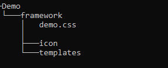 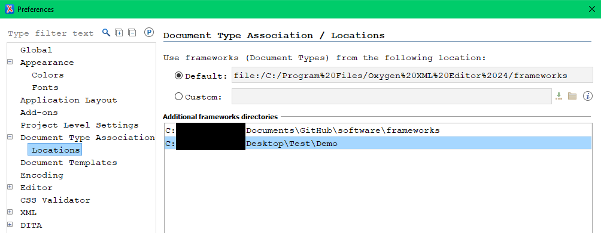
For customisers, in order to create a framework for a project, a few preparatory steps and configurations are necessary.9 Those include:
- The creation of a specific folder hierarchy (e.g., Demo/framework), as well as folders for icons, templates and a CSS file (fig. 1).
- The referencing of the folder structure as a Location in the Document Type Association Tab in oXygen (fig. 2).
- The actual creation process of a new framework (Document Type) in the Document Type Association Tab.
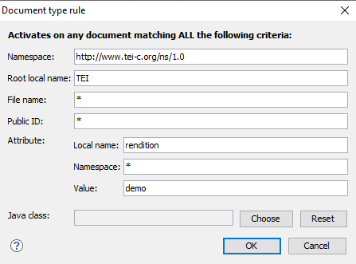
For instance, fig. 3 shows the association rules for a Demo framework
specifying that it is applicable to all TEI files with the attribute @rendition
and the value ‘demo’ in the <TEI> root element.
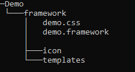
Once these steps have been completed, customisers can start editing the framework. It is recommended to create an oXygen project for the development process (see SyncRo Soft SRL 2002–2024d), as this allows for quicker access to the files.
To use a framework, all users need to do is associate it in oXygen. For this, customisers can either package the framework as an add-on for users to integrate or implement a GitHub (see GitHub Inc. 2024) or GitLab (see GitLab B.V. 2024) workflow for file sharing, which has proven effective for us10. If the latter is set up, users can simply:
- Clone the framework repository from GitHub (or GitLab).
- Open oXygen, navigate to the Document Type Association Tab, and add the cloned folder structure as a Location.
Creating a Framework
This section focuses on the process of creating a framework and highlights its most important components. This includes technical and conceptual prerequisites, an evaluation of the tool’s graphical user interface (GUI) and documentation, and examples showcasing core features and functionalities.
Technical Know-How
For customisers, proficiency in CSS is essential for the design, as XML is translated into the visually appealing and user-friendly display of the Author mode through CSS. To selectively address and manipulate individual elements within the – sometimes intricate – XML structure or to insert a fragment at a context-dependent location, the ability to navigate the XML tree using XPath expressions is also necessary.11
While not strictly necessary, an understanding of the concept of variables and skills in XSL, XQuery, or JavaScript are helpful for making full use of the tool, as it supports the inclusion of scripts via dedicated Author Mode operations (e.g. JSOperation, XSLTOperation, and XQueryOperation12). This allows for more complex XML manipulations for which the tool does not provide build-in operations.
Finally, knowledge of and the use of schemata such as XML Schema (see W3C, Fallside, and Walmsley 2004) or RelaxNG (see “RELAX NG Home Page” 2014) facilitate control over the data, preventing issues such as proliferation of attribute values, and ensuring that fragments are only inserted in valid places.
Conceptual Know-How
Before commencing framework development, the project’s conceptual objectives, requirements, and prerequisites must be established. This is vital for creating a tailored framework that meets the project’s specific needs. The process involves a comprehensive analysis of the source material and identification of existing groundwork (e.g. existing annotations of the data and / or defined data model) and requirements for the framework (e.g. how should it support users, what should be recorded and how). It also requires addressing questions related to the depth of information, features of the published (digital) edition, and any research questions the project aims to answer.
Guided by these conceptual considerations and building upon a data model13, customisers can create template XML files, which are then accessible to users through oXygen’s ‘New Document’ option.14 Templates provide the project’s individual XML structure and placeholders for data entry, ensuring uniformity across all files.
Technical Interface and GUI
Once created, the framework is stored in a .framework file, which is a configuration XML file that encapsulates all the settings and resources needed to work with XML-based documents associated through document type association. This means, it can be manually accessed and edited in oXygen, just like any other XML file. Alternatively, the tool provides a graphical user interface (GUI). It primarily consists of classical dialogue boxes for creating and editing the framework.
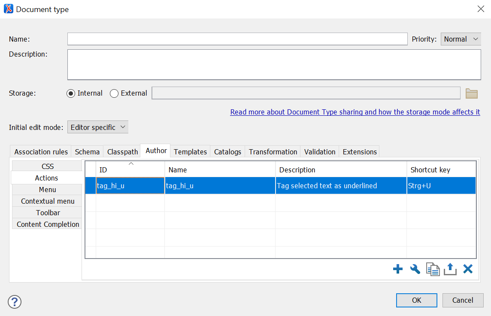
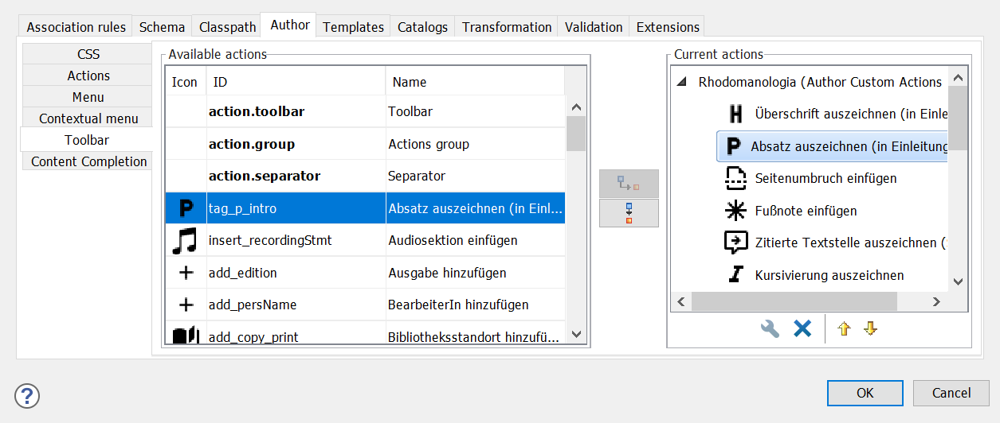 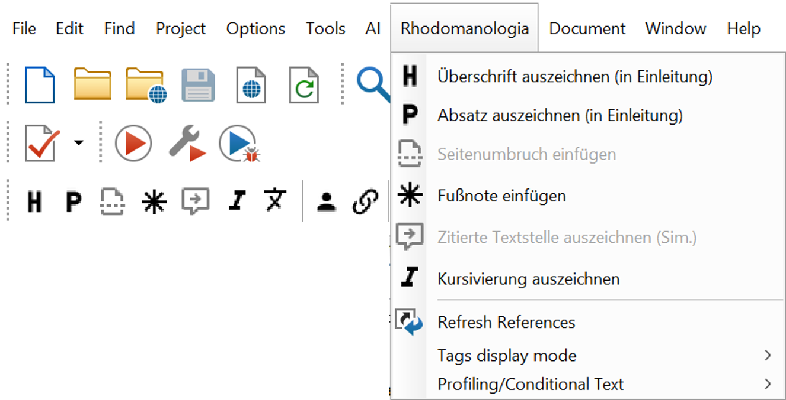
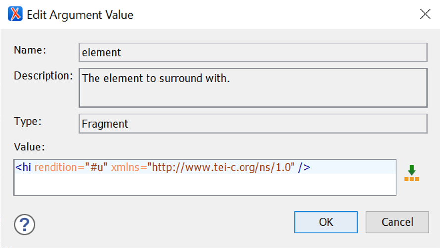 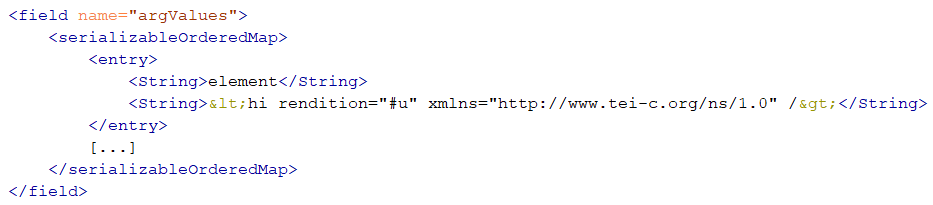
Terminology and Functionalities – Overview
oXygen provides a variety of built-in functionalities that can be used in either the CSS file or the framework file to facilitate interaction between the user and the document. The following is an overview of options deemed most useful, some of which will be explored in more detail later on.

- ID – to identify each action and make it invocable from anywhere in the framework, such as the CSS file or other actions.
- Description – a plain text description of the action’s functionality to be displayed to the user on mouseover.
- Icon – to visually represent the action when it is displayed as a button, for example in the toolbar.
- Keyboard shortcut – to call the action using a keyboard shortcut.
- Operation – the operation to be performed and its arguments.
- XPath constraint – to enable or disable application of the action in certain parts of the document.17
Author Mode Operations18: used in Author Mode Actions; serving as the primary task to be performed, for example:
DeleteElementOperation– deletes an element.ExecuteMultipleActionsOperation– consecutively calls and executes a list of actions via their ID.ExecuteValidationScenarioOperationandExecuteTransformationScenariosOperation– validates or transforms the document using a scenario already configured in oXygen’s validation / transformation settings.InsertFragmentOperation– inserts an XML fragment.XSLTOperation– executes an XSL transformation either referencing an external XSL file or providing the entire script in the action’s script argument.
Form Controls19: used in the CSS file to provide graphical user interfaces, for example:
oxy_browser()– to integrate an HTML frame.oxy_checkbox()– a checkbox to select or de-select an option.oxy_combobox()– a dropdown menu with predefined values.oxy_datePicker()– a calendar (with the option to specify the desired date format).oxy_textfield()– a plain text input field.oxy_video()– to integrate a video.
Custom CSS Functions20: used in the CSS file to enhance the layout for users and perform specific operations on values, for example:
oxy_action()– calls a predefined action from the framework or defines an action directly.oxy_concat()– concatenates strings.oxy_editor()21 – used in combination with oxy_label() to style forms.oxy_label()– supplies a display label for the edited segment.oxy_xpath()– evaluates an XPath expression.
Additional CSS Properties22: used in the CSS file to control the appearance or behaviour of elements, for example:
-oxy-collapse-text– to hide the text content of an element, for example, when it is already rendered using a function such as oxy_editor() (otherwise the content would be displayed twice).-oxy-editable– to enable or prohibit editing the content of an element.-oxy-foldable– to make elements foldable, for example, the metadata or facsimile section at the beginning of a TEI document.-oxy-placeholder-content– to show a placeholder for empty elements to let the users know what kind of input is expected (particularly useful when a form-like layout with labels is not feasible).
Editor Variables23: used in the framework file to define reusable values and thereby facilitate flexible interactions between users and the framework, for example:
${ask}– to ask users to provide more input or to choose from a given set of options before an XML fragment is inserted, e.g., values for attributes.${caret}– current cursor location, e.g., to set the next editable position inside or after an inserted XML fragment.${date}– to insert or display the current date.${framework}– the path of the current framework directory, e.g., to set a relative path to the folder containing icons used in the framework.${id}and${uuid}– application-level or universally unique identifier, e.g., to generate IDs to insert into the XML file or to use only during processing.${selection}– currently selected text, e.g., to surround it with an XML fragment.
Design and Visualisation (CSS)
The design of the final framework is entirely in the hands of the customiser. Whether users consider a framework practical or not depends on how the customiser shapes the framework and utilises the capabilities provided by the tool. It must therefore be noted in all subsequent considerations that only the presence of a function in the tool or its implementation effort should be understood as part of this paper’s tool critique, not the actual realisation and configuration in the individual framework.
In our experience, a framework’s acceptance among users and non-technical personnel is improved by visual proximity to familiar programmes. For instance, aligning the layout with widely-used word processing programmes such as MS Word lowers the entry barrier due to familiarity and facilitates intuitive use. Actions such as highlighting text and applying formatting through a toolbar button, for example, to mark headings or italicisation, are well-known to users. The tool allows customisers to create buttons in a similar manner, group them in a toolbar, and assign them individual actions. This layout is particularly suitable for projects or documents where predominantly prose text is generated, such as transcripts or introductory sections.
Regarding the rendering24 of the XML file, essentially anything styleable using CSS is possible25, such as Word-like page layouts, frames, colours, and more. However, CSS rendering has its limitations. Since no transformation or programming language is involved, each element is simply output where it appears in the document. Re-ordering or repositioning elements, such as numbered footnotes, or grouping and sorting metadata for neater input, is not possible, whereas in web development, CSS is widely used for these tasks. Furthermore, context-dependent styling is limited to the capabilities of CSS selectors: an element can be styled differently, for example, depending on its ancestor elements (parent / ancestor selector) or when it differs in terms of attributes or attribute values (attribute selector). However, it is not possible to conditionally output or style elements based on the presence of specific descendant elements.26
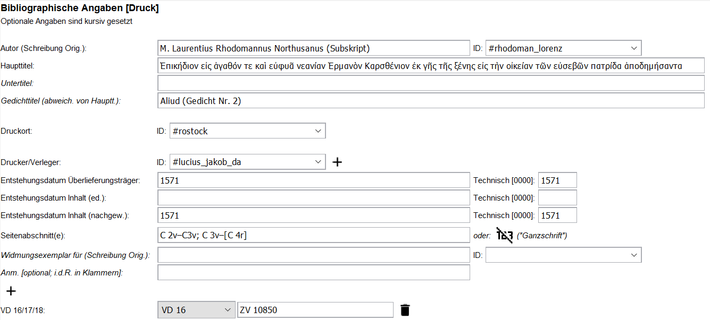oxy_editor() function (generating an input field that can be filled in by the
users, adding either element content or attribute values), and explanatory labels
can be provided through the oxy_label() function (fig. 11). As users are usually
familiar with filling in forms, this approach combines intuitive form completion
with standardised input formats, ensuring good data quality. In our projects, we
found the form approach particularly useful in areas where traditionally highly
formalised information is provided, such as metadata, bibliographic details,
indices, or object descriptions.
Especially in digital edition projects, where data is traditionally published online both as data and as a digital edition, there is also the opportunity to tailor the framework’s design to align with the online presentation. This way, users can already visualise the future presentation of the edited text during the editing process, which is often perceived as helpful. For instance, elements that will later be presented as links can already be displayed in blue and underlined in the framework, elements denoting quotations can be surrounded by quotation marks, and text justification, indentation, or different font sizes can already be implemented.
One last aspect not to be underestimated is the ability to hide elements from the XML file that are relevant only for technical personnel, not for users, such as sections related to copyright and rights. This ensures a cleaner look and prevents accidental alterations to sections that should not be edited.
Functionality (Framework)
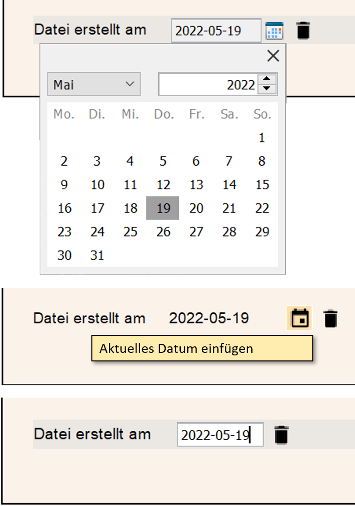oxy_datePicker()). Users can then select the date from the calendar, and it is
automatically inserted in the desired, predefined format. Additionally, there is
the option to insert the current date directly through an editor variable
(${date}). And, of course, a free text field can also be created, allowing users
to manually input the date (oxy_textfield()). All three options have legitimate
use cases, and the choice made by the customiser depends not on limitations of the
tool, but on the specific needs of the project. For new customisers, it would be
helpful if more projects shared their examples, specific use cases, and
experiences online. This would provide a broader understanding of the advantages
and disadvantages associated with different implementation approaches.
It is important to note that the person customising the framework is often not the one using it. We therefore consider the need for communication between customiser and user as an essential part of working with the tool. Ideally, users express a desire for workflow improvement or highlight a cumbersome step, and the customiser provides a solution by implementing a suitable action from the tool.
Following is a selection of settings, operations, form controls, and
variables, which have proven particularly useful for working on digital editions.
As mentioned earlier, the capability to design buttons through which
users can trigger actions is a central feature of the tool. They can be freely
arranged in the toolbar, visually sorted using separators, or grouped thematically
in dropdown submenus. The oxy_action() function in CSS allows buttons to be
directly output within the text. This option is particularly useful when an action
only makes sense at specific points in the document, such as when users should be
able to delete an optional element. Icons can be custom-designed, and a freely
formulated mouseover message can inform users about the action triggered by the
button.
When there is a need to add content to existing elements, dropdown
menus can be easily styled using the oxy_combobox() function. While the primary
use case likely involves adding attribute values, it is also possible to provide a
list of text content to choose from. This is particularly useful when standardised
values are frequently repeated but should be inserted as a text node rather than
an attribute value. For example, if the text genre in the metadata section isn’t
manually inserted but can be selected from a list of options and then applied as a
text node, it reduces the user’s typing workload, ensures consistency, and
eliminates the risk of typographical errors.
When combined with the oxy-xpath() function, a dropdown menu doesn’t
necessarily require a fixed, predefined list of values; instead, it can
dynamically fetch and display values based on the provided path. For instance, in
a section where the user must specify a location, the list of values can import
the project’s index file and offer only those entries that are discernible as
place names.
To assist users in using the framework correctly, external points of
reference can be included. For example, oxy_video() allows the embedding of
locally stored or remote videos (such as YouTube tutorials), providing guidance
for users throughout the editing process. The oxy_browser() form control
facilitates the integration of web pages, enabling customisers to link parts of a
documentation to the framework. Customisers proficient in Java coding can also
create their own custom form controls (see SyncRo Soft SRL 2002–2024k).
One of the most frequently used operations is to insert an XML
fragment, for example, to create a new empty entry in an index file, which can
then be filled in by the user (InsertFragmentOperation). The insert position is
freely selectable (before / after, as the first / last child) and the insert
location (any element in the document) can be specified via XPath. Thus, it does
not necessarily have to happen at the point from which the action is
triggered.
If the fragment is not only to be inserted but also to replace the
selected content or surround it with markup, there are two closely related
alternatives to achieve just that (InsertOrReplaceFragmentOperation and
SurroundWithFragmentOperation). These are useful when it is necessary to add
markup to existing text or elements, for instance, to mark a selected text as an
entity, such as person or place, and surround it with the corresponding XML
markup.
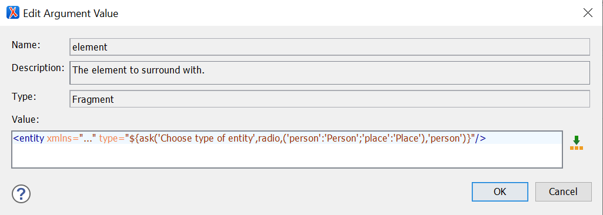${ask} variable in the dialogue box,
asking the user to choose between two attribute values before the XML code
is inserted.${ask} variable can be used to create a dialogue box, prompting
users to choose from a list of predefined values in a radio menu27 before inserting the XML fragment with
the selected values. A simple fragment (<entity>) with only two values
(‘person’ and ‘place’) for the @type attribute might look as shown in fig. 13.
Customisers can specify a title for the dialogue box, telling users what kind of information they need to provide (‘Choose type of entity’), along with a list of values to be inserted into the fragment, a label to display in the dialogue box (‘Person’ and ‘Place’), and a default value, pre-selecting the option in the radio menu (‘person’).
The importance of the default value argument must not be
underestimated. It allows users to swiftly proceed through dialogue boxes by
pressing ‘Enter’ if the most common option is pre-selected. Day-to-day use has
shown that these seemingly minor simplifications can significantly enhance work
efficiency. The ${ask} editor variable has proven useful and very
popular among users, as manually entering the sometimes quite technical attribute
values can be tiresome. Moreover, it reduces the necessity for displaying separate
input fields for each attribute, contributing to a cleaner framework. This is
especially useful for projects that rely heavily on storing standardised
information in attributes instead of textual element content.
Particularly for complex encoding it may not always be possible to
achieve the desired result in a single action. The ExecuteMultipleActionsOperation
allows listing multiple actions that are then triggered consecutively. For
example, the first action might insert a <graphic> element to the XML file,
asking users to provide an ID and an URL to the image file. A second action could
then execute an XSL script using the XSLTOperation to update a corresponding
facsimile section of the document. The XSLTOperation is a powerful operation, as
it allows for complex manipulations of the XML file which are not possible with
the build-in operations. It must be noted, however, that the tool’s interface only
provides a small input field for providing XML fragments or scripts. Due to the
window’s limited size and without most of oXygen’s usual code support, such as
colours and indentation, debugging and maintenance can be difficult. It is
therefore recommended to store XSL scripts as separate files.
Alternatively, the ExecuteTransformationScenariosOperation could be
employed, which references and triggers a transformation scenario already
configured in the transformation settings, thus including all the scenario’s
arguments, such as defining an output file path for the resulting document.
Another highly advantageous configuration option involves the ability
to mark text content, entire elements, attribute values, or suggested values in
dropdown menus as either editable or non-editable by setting the editable argument
of the function to either true or false. This way, more technical segments, such
as IDs, metadata, or attribute values, can be selected and displayed but not
altered. If entire elements should be displayed for review but not edited, the CSS
property -oxy-editable can be set to false.
And finally, for clarity of layout, the :empty (and
:not(:empty)) selector in CSS has proven particularly effective.
It enables the customiser to reduce the display to relevant parts of the XML file
or to present action buttons in the text only when they are contextually
appropriate, such as displaying an ‘open link in browser’ icon only once a URL has
been provided. It enhances clarity when specific elements or actions are revealed
to the user only after a higher-level value has been selected or entered.
Moreover, empty fields can be highlighted in colour, or specific placeholder
content can be displayed using the -oxy-placeholder-content CSS
property, drawing the user’s attention to missing inputs.
Documentation and Learnability
oXygen’s website provides a comprehensive guide (see SyncRo Soft SRL 2002–2024j) for creating custom frameworks, with additional resources available in various webinars on oXygen ‘s official YouTube channel (see SyncRo Soft SRL and @oxygenxml 2004). However, these materials provide only a basic overview. The webinars primarily focus on customising the DITA framework or addressing specific use cases. The website documentation outlines the functions of individual options but lacks clear implementation instructions and examples. This information gap is particularly noticeable regarding the built-in Author Mode operations.
In some cases, unexpected issues may arise, such as with the
SurroundWithFragmentOperation and the InsertOrReplaceFragmentOperation. The
intention was to display a button in the text, triggering the action of
surrounding a selected passage of text with XML markup (indicated by explicitly
including the ${selection} variable). However, the action was not applied to the
selected text. Instead, an empty element fragment was inserted where the button
was displayed. Apparently, the text selection was shifted to the button’s position
when it was clicked. This issue could only be resolved by relocating the button to
the toolbar. Instances like these highlight the need for more comprehensive
documentation and additional examples.
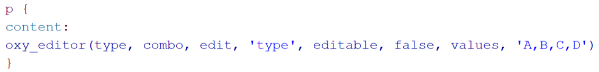 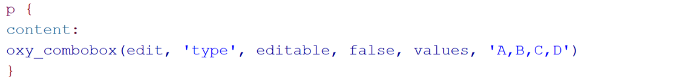oxy_editor() for creating a dropdown menu
for the values of the @type attribute.oxy_combobox() for creating a dropdown menu
for the values of the @type attribute.oxy_editor() function. It was introduced to the framework in 2012 (see SyncRo Soft SRL 2012) to facilitate
form-based layouts. As noted before, the oxy_editor() function can include any
form control as an argument, such as comboboxes. The two code snippets shown in fig. 14 and 15
are therefore functionally identical.
Both versions create a dropdown menu, offering the values A, B, C, D
for the @type attribute of the <p> element. The value selected by the user
will then be used as the attribute value. The oxy_editor() function is widely used
in webinars, yet it is missing from the current documentation. This means new
customisers cannot find any information on the arguments associated with this
function.
In our opinion, the documentation could be improved by adopting a more user-friendly style and intuitive navigation system. Currently, it adheres to the formal structure of the GUI dialogue boxes, making it difficult to find important features. The table of contents can also be challenging to navigate, especially for first-time users who are not familiar with form controls, CSS functions, and other technical distinctions. Improving the clarity and structure of the documentation would help customisers access the information they need.
In summary, learning to use custom frameworks can be challenging and requires extensive research through written documentation and video tutorials. The full potential of the tool may only become apparent through interactions with experienced customisers and users who actively use frameworks, as they can often identify areas for improvement by addressing tedious or laborious processes that may not be immediately apparent to new customisers.
Conclusion
Custom oXygen frameworks are a powerful tool to enable users with little or no knowledge of XML to engage directly with XML files, thereby lowering the barrier for non-technical personnel to work in digital edition projects. Creating and maintaining frameworks requires a certain level of technical knowledge from the customiser, including proficiency in CSS, schema languages, XPath, and XSL. For users of a framework, a significant challenge may arise from the complexity of the oXygen XML Editor itself, as it can initially feel overwhelming with its numerous features and functionalities. However, once the hurdle of setting up and familiarising oneself with oXygen are overcome, the benefits of using frameworks in projects become clear. They significantly reduce the need for specialised technical and digital annotation knowledge by visually replicating familiar systems (e.g., designing the framework as a form or making it resemble known text editors like Word). This allows users to focus on their annotation work in a familiar environment while producing high-quality data.
Frameworks integrate well into existing project workflows and processes, as diverse techniques and project materials can be seamlessly and flexibly combined to create a comprehensive working environment that encompasses content creation, validation, and documentation. Data quality is reliably ensured, as the data inserted through the framework is uniform, and illegitimate or missing content can be highlighted and easily spotted by users. The built-in actions and functions meet the majority of editing requirements and can even be expanded and customised when necessary.
Regrettably, the custom frameworks tool is not prominently featured in the oXygen environment, and its potential is not effectively communicated. A more user-friendly documentation and more real-world examples from other users and customisers would significantly improve visibility and accessibility.
While the term ‘framework’ is often used interchangeably with ‘ediarum’, it is crucial to recognise that they are not synonymous. Ediarum is a large-scale working environment that relies on oXygen frameworks, whereas using the oXygen custom framework tool directly to create project specific frameworks is a highly effective and less technically demanding solution. The broad range of functionalities and options available cover all of our projects’ use cases. Even knowing or using only a basic set of the tool’s features, some of which were explored in this paper, is still sufficient to meet the tailored needs of most edition projects.
To conclude, in our project experience, both the customisers and the users consider oXygen frameworks to be an effective, recommendable tool that significantly improves the editing workflow.
Bibliography
- Berlin-Brandenburgische Akademie der Wissenschaften, and TELOTA - IT/DH. 2024a. “ediarum. Digitale Editionen Erstellen Und Publizieren.” ediarum. Digitale Editionen erstellen und publizieren. Accessed September 6, 2024. https://web.archive.org/web/20240917072449/https://www.ediarum.org/index.html.
- ———. 2024b. “ediarum.JAR”: GitHub. Accessed September 6, 2024. https://web.archive.org/web/20240917072314/https://github.com/ediarum/ediarum.JAR.
- ———. 2024c. “Features.” ediarum. Accessed September 6, 2024. https://web.archive.org/web/20240917072606/https://www.ediarum.org/features.html.
- Dumont, Stefan, Nadine Arndt, Sascha Grabsch, and Lou Klappenbach. 2021. ediarum.BASE.edit v2.0.0 (v2.0.0). Zenodo. https://doi.org/10.5281/zenodo.5897100.
- eXist Solutions. 2018. “eXistdb.” eXist. Accessed September 9, 2024. https://exist-db.org/exist/apps/homepage/index.html.
- Fechner, Martin. 2023. ediarum.JAR (v3.2.1). Zenodo. https://doi.org/10.5281/zenodo.7941448
- Github Inc. 2024. “GitHub.” Software development platform. Accessed January 18, 2024. https://web.archive.org/web/20240913063037/https://github.com/.
- GitLab B.V. 2024. “GitLab.” Software development platform. Accessed January 18, 2024. https://web.archive.org/web/20240917071638/https://about.gitlab.com/.
- Mertgens, Andreas. “Ediarum. A toolbox for editors and developers” RIDE 11 (2019). Accessed September 6 2024. https://doi.org/10.18716/ride.a.11.4.
- OASIS Open. 2018. “DITA Version 1.3 Specification.” OASIS. Accessed January 16, 2024.https://web.archive.org/web/20240116105406/http://docs.oasis-open.org/dita/dita/v1.3/dita-v1.3-part0-overview.html.
- “RELAX NG Home Page.” 2014. RELAX NG Home Page. Accessed January 18, 2024. https://web.archive.org/web/20240118070611/https://relaxng.org/.
- SyncRo Soft SRL. 2002–2024a. “Additional CSS Properties.” Documentation. oXygen XML Editor. Accessed January 18, 2024. http://web.archive.org/web/20240118071706/https://www.oxygenxml.com/doc/versions/26.0/ug-editor/topics/dg-css-additional-properties.html.
- ———. 2002–2024b. “Built-in Author Mode Operations.” Documentation. oXygen XML Editor. Accessed January 18, 2024. http://web.archive.org/web/20240118071822/https://www.oxygenxml.com/doc/versions/26.0/ug-editor/topics/dg-default-author-operations.html.
- ———. 2002–2024c. “Creating a Framework through the Configuration Dialog.” Documentation. oXygen XML Editor. Accessed January 16, 2024. https://web.archive.org/web/20240116111755/https://www.oxygenxml.com/doc/versions/26.0/ug-editor/topics/framework-customization-extending.html.
- ———. 2002–2024d. “Creating a New Project.” Documentation. oXygen XML Editor. Accessed January 18, 2024. https://web.archive.org/web/20240118063352/https://www.oxygenxml.com/doc/versions/26.0/ug-editor/topics/create-new-project.html.
- ———. 2002–2024e. “Creating and Customizing Author Mode Actions for a Framework.” Documentation. oXygen XML Editor. Accessed January 18, 2024. https://web.archive.org/web/20240118070808/https://www.oxygenxml.com/doc/versions/26.0/ug-editor/topics/dg-create-custom-actions.html.
- ———. 2002–2024f. “Custom CSS Functions.” Documentation. oXygen XML Editor. Accessed January 18, 2024. http://web.archive.org/web/20240118071502/https://www.oxygenxml.com/doc/versions/26.0/ug-editor/topics/dg-oxygen-css-functions.html.
- ———. 2002–2024g. “Customers.” oXygen XML Editor. Accessed January 16, 2024. https://web.archive.org/web/20240116104421/https://www.oxygenxml.com/customers.html.
- ———. 2002–2024h. “Editor Variables.” Documentation. oXygen XML Editor. Accessed January 18, 2024. http://web.archive.org/web/20240118071843/https://www.oxygenxml.com/doc/versions/26.0/ug-editor/topics/editor-variables.html#editor-variables.
- ———. 2002–2024i. “Form Controls.” Documentation. oXygen XML Editor. Accessed January 18, 2024. http://web.archive.org/web/20240118071348/https://www.oxygenxml.com/doc/versions/26.0/ug-editor/topics/form-controls.html.
- ———. 2002–2024j. “Framework and Author Mode Customization.” Documentation. oXygen XML Editor. Accessed January 18, 2024. http://web.archive.org/web/20240118072955/https://www.oxygenxml.com/doc/versions/26.0/ug-editor/topics/authoring_customization.html.
- ———. 2002–2024k. “Implementing Custom Form Controls.” Documentation. oXygen XML Editor. Accessed January 18, 2024. http://web.archive.org/web/20240118072107/https://www.oxygenxml.com/doc/versions/26.0/ug-editor/topics/implementing-custom-form-controls.html.
- ———. 2002–2024l. “Oxygen XML Editor - Academic Edition.” oXygen XML Editor. Accessed October 3, 2024. https://web.archive.org/web/20241003103831/https://www.oxygenxml.com/buy_academic_edition.html.
- ———. 2002–2024m. oXygen XML Editor (version 23.1). Windows, MacOS, Linux. Romania: SyncRo Soft SRL. Accessed December 18, 2023. https://web.archive.org/web/20231218081955/https://www.oxygenxml.com/xml_editor.html.
- ———. 2002–2024n. “Sharing a Framework.” Topic. oXygen XML Editor. Accessed January 18, 2024. https://web.archive.org/web/20240118064556/https://www.oxygenxml.com/doc/versions/26.0/ug-editor/topics/author-document-type-extension-sharing.html.
- ———. 2002–2024o. “Standard W3C CSS Supported Features.” oXygen XML Editor. Accessed October 3, 2024. https://www.oxygenxml.com/doc/versions/26.1/ug-editor/topics/dg-standard-css-support.html.
- ———. 2012. “Oxygen XML Editor 14.1.” Version History. oXygen XML Editor. Accessed January 18, 2024. http://web.archive.org/web/20240118074418/https://www.oxygenxml.com/xml_editor/whatisnew14.1.html.
- ———. 2023. “What’s New in Oxygen XML Editor 25.1.” oXygen XML Editor. Accessed January 16, 2024. https://web.archive.org/web/20240116104953/https://www.oxygenxml.com/xml_editor/whatisnew25.1.html.
- SyncRo Soft SRL, and @oxygenxml. 2004. oXygen XML Channel. Webinars and conference recordings. YouTube: oXygen XML Channel. Accessed January 18, 2024. https://www.youtube.com/@oxygenxml/search?query=Framework.
- TEI Consortium. n.d. “TEI: Text Encoding Initiative.” Accessed January 16, 2024. https://web.archive.org/web/20240116105707/https://tei-c.org/.
- W3C, and Bert Bos. 2024. “CSS Specifications.” Documentation. W3C – Description of All CSS Specifications. Accessed January 18, 2024. https://web.archive.org/web/20240118065122/https://www.w3.org/Style/CSS/specs.en.html.
- W3C, David C. Fallside, and Priscilla Walmsley. 2004. “XML Schema Part 0: Primer Second Edition.” Documentation. W3C Recommendation. Accessed January 18, 2024. https://web.archive.org/web/20240118070415/https://www.w3.org/TR/xmlschema-0/.
- W3C, Jonathan Robie, Michael Dyck, and Josh Spiegel. 2017. “XML Path Language (XPath) 3.1.” Documentation. W3C Recommendations. Accessed January 18, 2024. https://web.archive.org/web/20240118065535/https://www.w3.org/TR/xpath-31/.
- W3schools. 1999–2024a. “CSS Tutorial.” Tutorial. W3schools. Accessed January 18, 2024. https://web.archive.org/web/20240118070014/https://www.w3schools.com/css/default.asp.
- ———. 1999–2024b. “XPath Tutorial.” Tutorial. W3schools. Accessed January 18, 2024. https://web.archive.org/web/20240118070143/https://www.w3schools.com/xml/xpath_intro.asp.
Notes
- While the licenses for the private sector are rather expensive, SyncRo Soft SRL accommodates the academic sector with relatively inexpensive academic licenses (see SyncRo Soft SRL 2002–2024l). ↑
- For more information on the TEI Standard, see TEI Consortium n.d. ↑
- For more information on the DITA Standard, see OASIS Open 2018. ↑
- To avoid confusion, the term ‘user’ will be employed when discussing the person engaged in the editing process, as distinct from the term ‘editor’, which refers to the oXygen XML Editor programme. ↑
- For more information on eXist-db, see eXist Solutions 2018. ↑
- A detailed review of ediarum can be found in RIDE Issue 11 (see Mertgens 2019), for anyone interested in a working and publishing environment for their project. ↑
- It should be noted that oXygen also supports many other formats, such as JSON, HTML or JavaScript. However, these play a subordinate role in the creation of and work with frameworks, which is why other formats and functionalities are not discussed in this review. ↑
- oXygen is available for Windows, MacOS, and Linux. ↑
- For step-by-step instructions, see SyncRo Soft SRL 2002–2024c. However, it should be noted that the documentation does not include visual illustrations of individual steps, which may pose challenges for new customisers during the initial configuration process. ↑
- For alternative methods of sharing a framework, such as via an add-on, and detailed instructions, see SyncRo Soft SRL 2002–2024n. ↑
- Both CSS and XPath are thoroughly documented, and numerous tutorials are available online for beginners as well as for more advanced requirements. See, for example, W3schools 1999–2024a; ibid. 1999–2024b; W3C et al. 2017; W3C and Bos 2004. ↑
- In this review we do not delve deeply into these operations, as they have played only a limited role in our projects. For a full description, see SyncRo Soft SRL 2002-2024b. ↑
- It is strongly recommended to commence work on the framework and deploy it in productive editorial work only when the data model is largely finalised and no more significant changes are anticipated, as late or frequent changes to the data model require significant post-work in the framework. Additionally, using a schema enables schema-aware restrictions of actions, preventing users from inadvertently inserting XML fragments in places where they are not allowed, according to the data model. ↑
- The complexity of the project determines the number of template files needed. For instance, a homogeneous set of documents like letters might require just one template file. Conversely, projects dealing with diverse content types, such as transcriptions of diverse source material (e.g., manuscripts, letters, poems) and editorial content (e.g., bibliographic items, indices, introductory texts), may necessitate multiple template files. ↑
- The menu option is particularly suitable for complex frameworks and projects where numerous actions need to be nested and grouped, and displaying all options in the toolbar would be overwhelming. ↑
- For the full list of Author Mode Actions, see SyncRo Soft SRL 2002–2024e. ↑
- The usefulness of XPath constraints cannot be overstated. It allows customisers to control action execution, ensuring that only valid XML data is generated. Entire actions can be restricted to the cursor being placed in the right place in the document. For example, a toolbar button triggering an action for encoding reading variants in a manuscript transcription could appear grey and unclickable if the cursor is placed in a section where this action is not applicable, such as the metadata section. ↑
- For the full list of Author Mode Operations, see SyncRo Soft SRL 2002–2024b. ↑
- For the full list of Form Controls, see SyncRo Soft SRL 2002–2024i. ↑
- For the full list of Custom CSS Functions, see SyncRo Soft SRL 2002–2024f. ↑
- oxy_editor() is an alternative, possibly deprecated, method of using form controls as they can be taken as an argument; see section 'Documentation and Learnability', p. 64 for more details. ↑
- For the full list of Additional CSS Properties, see SyncRo Soft SRL 2002–2024a. ↑
- For the full list of editor variables, see SyncRo Soft SRL 2002–2024h. ↑
- This section focuses solely on rendering the XML file using CSS. The options for modifying the XML content will be discussed in the next section. ↑
- Note that while CSS display commonly varies by machine, browser, or platform, oXygen generally maintains a consistent display across different environments. However, not all typical CSS features and selectors are supported. For a full list, see SyncRo Soft SRL 2002–2024o. ↑
-
For example, it is
possible to style
<note>elements differently based on their ancestor, such asteiHeader note {...}vs.text note {...}, or based on their attributes, likenote[type="footnote"]vs.note[type="endnote"]. However, it is not possible, for instance, to change a note’s text colour from red to green once a certain descendant element has been added by the user. ↑ -
In addition to radio buttons, the
${ask}editor variable also supports creating dropdown menus or fields for free text entry in the dialogue box. These can be used, for example, to prompt the user to provide the number of a footnote as a text value, or to select the language of a text from a list of standardised language codes. ↑
@article{oxygen-framework,
author = {Bunselmeier, Jennifer and Krottmaier, Sina},
title = {Untangling Data Complexity: Custom Oxygen Frameworks for Edition Projects},
journal = {RIDE – A review journal for digital editions and resources},
number = {19},
year = {2024},
doi = {10.18716/ride.a.19.2},
url = {https://doi.org/10.18716/ride.a.19.2},
}TY - JOUR
AU - Bunselmeier, Jennifer
AU - Krottmaier, Sina
TI - Untangling Data Complexity: Custom Oxygen Frameworks for Edition Projects
T2 - RIDE – A review journal for digital editions and resources
IS - 19
PY - 2024
DA - 2024/12
DO - 10.18716/ride.a.19.2
UR - https://doi.org/10.18716/ride.a.19.2
PB - Institut für Dokumentologie und Editorik e.V.
LA - en
ER - Bunselmeier, J., & Krottmaier, S. (2024). Untangling Data Complexity: Custom Oxygen Frameworks for Edition Projects. RIDE – A review journal for digital editions and resources, (19). https://doi.org/10.18716/ride.a.19.2Bunselmeier, Jennifer, and Sina Krottmaier. "Untangling Data Complexity: Custom Oxygen Frameworks for Edition Projects." RIDE – A review journal for digital editions and resources, no. 19, 2024. https://doi.org/10.18716/ride.a.19.2.Bunselmeier, Jennifer, and Sina Krottmaier. "Untangling Data Complexity: Custom Oxygen Frameworks for Edition Projects." RIDE – A review journal for digital editions and resources, no. 19 (2024). https://doi.org/10.18716/ride.a.19.2.